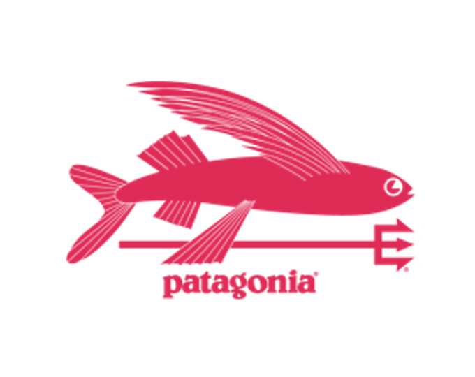

홈 > 브랜드 매거진 > 파타고니아
파타고니아
파타고니아는 아웃도어 브랜드이면서 동시에 소비를 줄이라는 역설적 메시지로 신뢰를 쌓은 브랜드다. 제품을 파는 기업이지만 브랜드의 설득력은 자연, 책임, 오래 쓰는 태도를 일관되게 말하는 데서 나온다.
산업 분야 스포츠·아웃도어 · 공개 등급 편집 검수 · 브랜드 평가 4.7 ★


한눈에 보는 브랜드
파타고니아는 아웃도어 브랜드이면서 동시에 소비를 줄이라는 역설적 메시지로 신뢰를 쌓은 브랜드다. 제품을 파는 기업이지만 브랜드의 설득력은 자연, 책임, 오래 쓰는 태도를 일관되게 말하는 데서 나온다.
브랜드 관점
파타고니아는 아웃도어 브랜드이면서 동시에 소비를 줄이라는 역설적 메시지로 신뢰를 쌓은 브랜드다. 제품을 파는 기업이지만 브랜드의 설득력은 자연, 책임, 오래 쓰는 태도를 일관되게 말하는 데서 나온다.
시작과 성장
아웃도어 브랜드 파타고니아는 1973년, 미국의 전설적인 등반가 이본 쉬나드에 의해 설립되었다. 파타고니아는 원래 등반 장비 회사로 시작되었는데, 회사가 만든 장비가 바위를 파괴한다는 것을 알게 된 후 환경 보호를 위한 비즈니스 철학을 세우게 되었다.
'환경을 보호하기 위해 사업을 이용한다'는 파타고니아만의 브랜드 철학은 제품과 다양한 캠페인을 통해 전달되고 있다.
브랜드 아이덴티티
파타고니아는 남아메리카 대륙 끝에 있는 지역의 이름을 따서 만들어졌다. 파타고니아 지역의 거칠고 험난한 환경과 달리, 브랜드 파타고니아의 지구를 위한 행보는 따뜻하다.
새 옷을 사는 대신 갖고 있는 옷을 오래 입자는 캠페인을 벌이고, 매출액의 1%를 환경을 위해 기부하는 등 환경 보호를 위한 다양한 활동을 실천하고 있다. 아웃도어 브랜드 파타고니아는 1973년, 미국의 전설적인 등반가 이본 쉬나드에 의해 설립되었다.
파타고니아는 원래 등반 장비 회사로 시작되었는데, 회사가 만든 장비가 바위를 파괴한다는 것을 알게 된 후 환경 보호를 위한 비즈니스 철학을 세우게 되었다. '환경을 보호하기 위해 사업을 이용한다'는 파타고니아만의 브랜드 철학은 제품과 다양한 캠페인을 통해 전달되고 있다.
제품과 서비스
파타고니아의 제품과 서비스는 스포츠·아웃도어 범주에서 해석됩니다.
현재 상태
타임라인
BI/CI 변천사
함께 읽을 브랜드
 스포츠·아웃도어 · 자료 기반코오롱스포츠
스포츠·아웃도어 · 자료 기반코오롱스포츠코오롱스포츠(KOLON SPORT)는 코오롱인더스트리 FnC부문이 운영하는 대한민국의 아웃도어 브랜드다. 1973년 창립한 국내 1세대 아웃도어로, 고기능성 등산·아...
 스포츠·아웃도어 · 자료 기반챔스스포츠
스포츠·아웃도어 · 자료 기반챔스스포츠챔스 스포츠(Champs Sports)는 운동화·스포츠 의류·용품을 판매하는 미국의 스포츠 소매 체인이다.
 스포츠·아웃도어 · 매거진 완성나이키
스포츠·아웃도어 · 매거진 완성나이키나이키는 스포츠용품보다 자기극복의 서사를 더 강하게 판매하는 브랜드다. 신발과 의류는 제품이지만, 소비자가 실제로 구매하는 것은 기록을 갱신하고 자신을 증명하고 싶은...
 스포츠·아웃도어 · 자료 기반블랙야크
스포츠·아웃도어 · 자료 기반블랙야크블랙야크(BLACKYAK)는 BYN블랙야크가 운영하는 대한민국의 아웃도어 브랜드다. 1973년 등산용품점 '동진'에서 출발한 그룹이 1995년 '블랙야크' 브랜드를...
 스포츠·아웃도어 · 자료 기반네파
스포츠·아웃도어 · 자료 기반네파네파(NEPA)는 1996년 이탈리아에서 시작해 2005년부터 한국에서 본격 전개된 아웃도어 브랜드다.
EI
아이더
스포츠·아웃도어 · 자료 기반아이더아이더(EIDER)는 1962년 프랑스에서 설립돼 현재 한국 K2코리아가 전개·보유한 아웃도어 브랜드다.
 스포츠·아웃도어 · 편집 검수뉴발란스
스포츠·아웃도어 · 편집 검수뉴발란스뉴발란스(New Balance)는 미국 보스턴에 기반을 둔 비상장 운동화·스포츠 의류 기업이다.
리복(Reebok)은 영국 볼턴에서 시작된 운동화·스포츠 의류 브랜드이다.